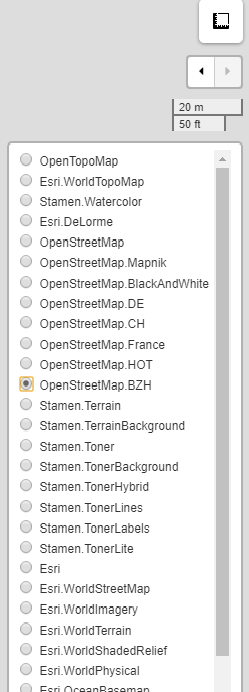

Site Analyser is a free, simple, and easy to use tool with lots of functions. Helpful to Architects, Urban Planners, and Students for site analysis which is an important pre-designing process. This tool provides features like locating, drawing and editing the site, it also gives the area, perimeter, longitude & latitude of the site. Moreover it offers a wide variety of map options to choose from depending on the needs.
About

How to Use?

1. Zoom-in to the map.
2. Zoom-out of the map.
3. Draw lines with this, which also gives distance between two points.
4. For Drawing polygons on the map, click on finish to complete the drawing.
5. For making rectangles and squares.
6. Make circular figures, with radius given.
7. PinPoint Markers to mark destinations.
8. Circular-Markers, to mark important places or destinations.
9. To save changes and edit features.
10. Delete existing features by clicking on them.
11. Customize color, line weight, line type, opacity of features and by clicking on markers, even its color and logo can be changed.
12. Search button, used to search locations by selecting options from drop down list.

1. Create your own polygon or shape for measurements, it also gives area, perimeter, longitude and latitude of the points plotted.
2. 35+ Maps to choose from based on your requirements.